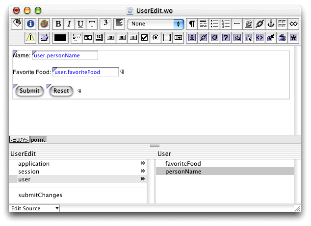

| PATH |

In this section, you'll create a new project and add a component for displaying and editing a user's information.
Remember that each component has its own Java class. It is convenient to think of components, as well as the objects representing them, as self-contained units with specific tasks. The task of the new component is to allow the user to edit a User object. By encapsulating behavior this way, you ensure that if you add, remove, or alter the properties of a user, you need to modify only this component to allow editing the new attributes.
You begin by creating a new project since you no longer need the code for tracking the request-response cycle. Then you add the custom User class and create a component for editing a User object. Then you will alter the Main component to maintain a list of users rather than a single user, and add methods to use the new component to edit any one of them.
User.java class.Follow the steps in "Adding the Custom Class" to add the file to the project. Then edit the file so that it looks like Listing 6-3.
Listing 6-3 User.java
import com.webobjects.foundation.*;
import com.webobjects.appserver.*;
import com.webobjects.eocontrol.*;
public class User extends Object {
protected String personName;
protected String favoriteFood;
public String personName() {
return personName;
}
public void setPersonName(String newPersonName) {
personName = newPersonName;
}
public String favoriteFood() {
return favoriteFood;
}
public void setFavoriteFood(String newFavoriteFood) {
favoriteFood = newFavoriteFood;
}
public boolean entryIncomplete() {
if (personName == null || favoriteFood == null || personName.equals("") || favoriteFood.equals("")) {
return true;
}
else {
return false;
}
}
}UserEdit in
the File Name text field.You'll notice that the new component is added to the project's Web Components group.
You're now ready to customize the component used for editing
a User object, UserEdit. The user edits one User object at a time,
so UserEdit.java needs
to have one instance variable of type User. The UserEdit component
will have fields similar to those defined in the Main component
of the UserEntry project (see "User Interface")
and buttons to submit and cancel the changes.
UserEdit.wo in
WebObjects Builder.user to
the component.Select the options that create an instance variable and provide accessor methods. This variable holds the particular User object being edited.
submitChanges to
the component. Choose Main as the page returned by the method. This
means that when the user is done editing, she's returned to the
Main component rather than the UserEdit component.submitChanges method
to the WOSubmitButton's action attribute.The WOResetButton resets the form fields.
UserEdit.wo.submitChanges method
in UserEdit.java so that
it looks like Listing 6-4.Listing 6-4 EditUser.java's submitChanges method
public Main submitChanges() {
Main nextPage = (Main)pageWithName("Main");
// Initialize your component here
nextPage.setUser(user); // send user object to the Main page
return nextPage;
}UserEdit.java.Figure 6-1 UserEdit.wo

© 2001 Apple Computer, Inc.